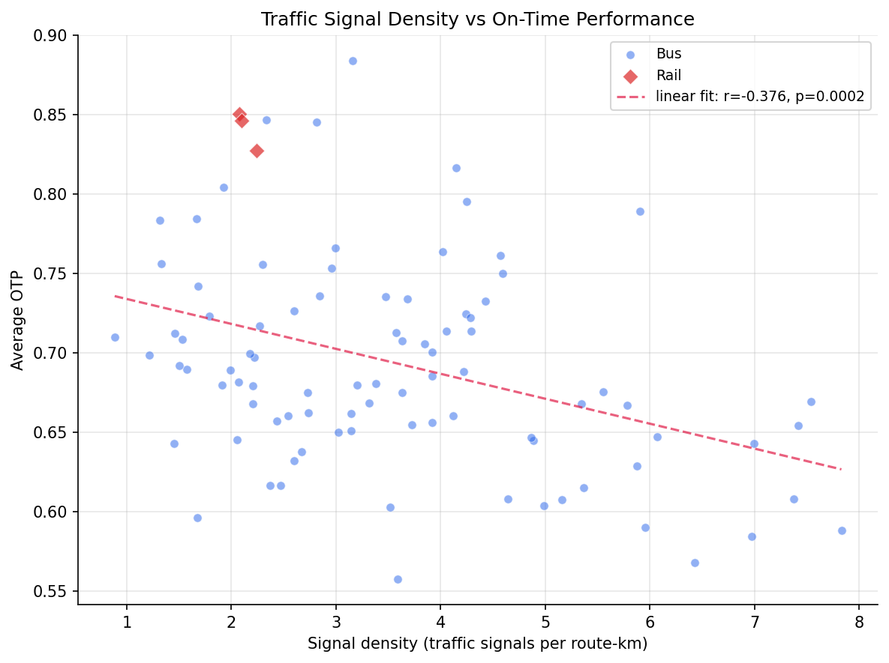
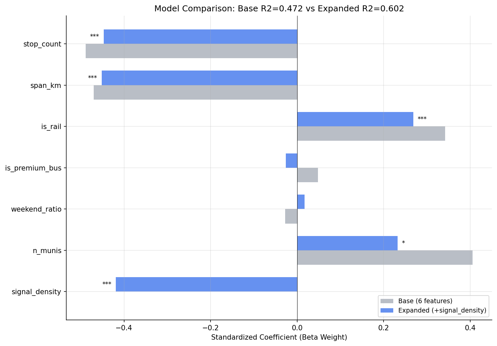
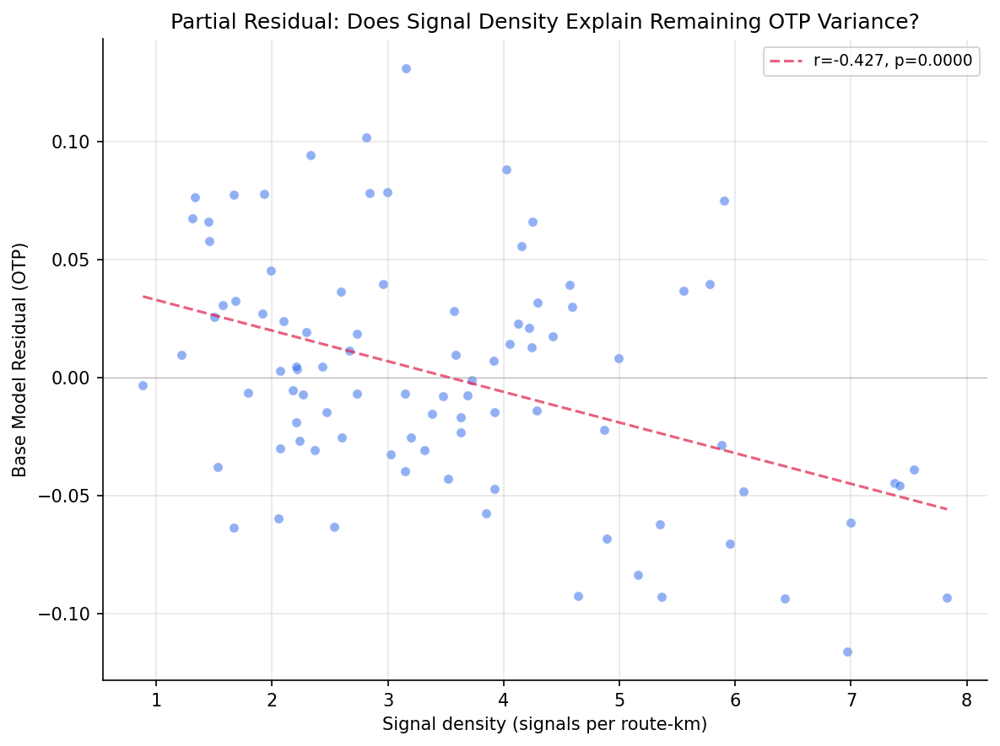
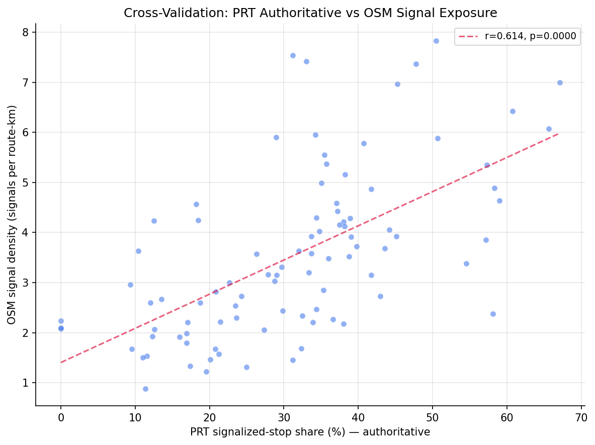

Analysis
51 - Traffic Signals and OTP
Ridership and External Factors
Coverage: 2019-01 to 2025-11 (from otp_monthly).
Built 2026-06-15 11:52 UTC · Commit e5cf673
Page Navigation
Analysis Navigation
Data Provenance
flowchart LR
51_traffic_signals_otp(["51 - Traffic Signals and OTP"])
t_otp_monthly[("otp_monthly")] --> 51_traffic_signals_otp
01_data_ingestion[["Data Ingestion"]] --> t_otp_monthly
u1_01_data_ingestion[/"data/routes_by_month.csv"/] --> 01_data_ingestion
u2_01_data_ingestion[/"data/PRT_Current_Routes_Full_System_de0e48fcbed24ebc8b0d933e47b56682.csv"/] --> 01_data_ingestion
u3_01_data_ingestion[/"data/Transit_stops_(current)_by_route_e040ee029227468ebf9d217402a82fa9.csv"/] --> 01_data_ingestion
u4_01_data_ingestion[/"data/PRT_Stop_Reference_Lookup_Table.csv"/] --> 01_data_ingestion
u5_01_data_ingestion[/"data/average-ridership/12bb84ed-397e-435c-8d1b-8ce543108698.csv"/] --> 01_data_ingestion
t_route_signals[("route_signals")] --> 51_traffic_signals_otp
11_signal_overlay[["Signal Overlay ETL"]] --> t_route_signals
u1_11_signal_overlay[/"data/osm-signals/traffic_signals_raw.json"/] --> 11_signal_overlay
u2_11_signal_overlay[/"data/GTFS/shapes.txt"/] --> 11_signal_overlay
u3_11_signal_overlay[/"data/GTFS/trips.txt"/] --> 11_signal_overlay
u4_11_signal_overlay{"OpenStreetMap Overpass API"} --> 11_signal_overlay
t_stop_signals[("stop_signals")] --> 51_traffic_signals_otp
15_stop_signals[["PRT Stop-Signal Classification ETL"]] --> t_stop_signals
u1_15_stop_signals[/"data/prt-stop-signals/bus_stops_with_signals_2602.xlsx"/] --> 15_stop_signals
t_route_stops[("route_stops")] --> 51_traffic_signals_otp
01_data_ingestion[["Data Ingestion"]] --> t_route_stops
t_routes[("routes")] --> 51_traffic_signals_otp
01_data_ingestion[["Data Ingestion"]] --> t_routes
t_stops[("stops")] --> 51_traffic_signals_otp
01_data_ingestion[["Data Ingestion"]] --> t_stops
d1_51_traffic_signals_otp(("numpy (lib)")) --> 51_traffic_signals_otp
d2_51_traffic_signals_otp(("polars (lib)")) --> 51_traffic_signals_otp
d3_51_traffic_signals_otp(("scipy (lib)")) --> 51_traffic_signals_otp
classDef page fill:#dbeafe,stroke:#1d4ed8,color:#1e3a8a,stroke-width:2px;
classDef table fill:#ecfeff,stroke:#0e7490,color:#164e63;
classDef dep fill:#fff7ed,stroke:#c2410c,color:#7c2d12,stroke-dasharray: 4 2;
classDef file fill:#eef2ff,stroke:#6366f1,color:#3730a3;
classDef api fill:#f0fdf4,stroke:#16a34a,color:#14532d;
classDef pipeline fill:#f5f3ff,stroke:#7c3aed,color:#4c1d95;
class 51_traffic_signals_otp page;
class t_otp_monthly,t_route_signals,t_route_stops,t_routes,t_stop_signals,t_stops table;
class d1_51_traffic_signals_otp,d2_51_traffic_signals_otp,d3_51_traffic_signals_otp dep;
class u1_01_data_ingestion,u1_11_signal_overlay,u1_15_stop_signals,u2_01_data_ingestion,u2_11_signal_overlay,u3_01_data_ingestion,u3_11_signal_overlay,u4_01_data_ingestion,u5_01_data_ingestion file;
class u4_11_signal_overlay api;
class 01_data_ingestion,11_signal_overlay,15_stop_signals pipeline;
Findings
Findings: Traffic Signals and OTP
Summary
Traffic-signal density is a strong, independent predictor of on-time performance. Routes that pass more traffic signals per mile run measurably later: adding signal density to the six-feature structural model lifts explained OTP variance from 47% to 60% (adjusted R-squared 0.43 to 0.57), and signal density remains highly significant after controlling for stop count, route length, mode, and municipal reach (F-test p < 0.0001). Each additional signal per route-km is associated with roughly 1.75 percentage points lower OTP. This contrasts sharply with Analysis 27, which found that traffic volume (AADT) had no effect — it is the fixed, repeated stop-and-wait of signals, not how busy the road is, that tracks with delay.
Independently confirmed by PRT's authoritative records. PRT supplied a
per-stop signal classification (the stop_signals table). The share of a route's
stops that sit at a signal — a completely independent measure of signal exposure
— predicts OTP just as strongly (r = −0.50; +13.9 R-squared points beyond the
structural model, F = 29.9, p < 0.0001) and agrees with the OpenStreetMap
density measure (r = +0.61). When both are entered together they remain
significant and non-collinear (VIF ≈ 2.4 each), so the conclusion does not hinge
on the crowd-sourced OSM data.
Key Numbers
- 92 routes analyzed (89 bus, 3 rail) with 12+ months of OTP data and matched signal data.
- 2,820 OpenStreetMap traffic signals county-wide were matched to GTFS route shapes within a 30 m buffer.
- Signal density ranges 0.89 to 7.83 signals/km (median ~3.2).
- Bivariate correlation: signal density vs OTP r = -0.38 (p = 0.0002).
- Base structural model R-squared 0.472 → expanded model 0.602 (adjusted 0.435 → 0.569); nested F-test p < 0.0001.
- Expanded-model signal-density coefficient -0.0175 (beta weight -0.42, p < 0.0001) — about -1.75 pp OTP per +1 signal/km.
- VIF for signal density = 1.35 (all predictors < 5) — no multicollinearity.
- Bus-only: base R-squared 0.379 → 0.532 (F = 26.9, p < 0.0001, beta -0.45).
Authoritative cross-validation (PRT stop_signals)
- PRT signalized-stop share vs OSM signal density: r = +0.61 (p < 0.0001); PRT signalized-stop count vs OSM signal count: r = +0.76. The two independent signal-exposure measures agree.
- PRT signalized-stop share vs OTP: r = −0.50 (p < 0.0001) — the
stop-normalized, honest predictor. (Raw count r = −0.70, but it tracks
stop_count and is confounded, exactly as raw OSM
n_signalsis.) - Authoritative model (base + sig_stop_share): R-squared 0.472 → 0.611 (+0.139, F = 29.9, p < 0.0001), beta −0.44 — slightly stronger than the OSM density model (+0.130).
- Combined model (base + density + share): R-squared 0.635; both signal measures stay significant (density p = 0.022, share p = 0.008) with VIF ≈ 2.4 each — distinct, non-redundant facets of signal exposure.
Observations
- Raw signal count overstates the effect. Raw
n_signalscorrelates with OTP at r = -0.65, but it also correlates with route length at r = +0.47 — a long route passes more signals and tends to run later. Dividing by route length isolates the signal effect: signal density correlates with OTP at the more modest r = -0.38. The regression therefore uses density, not count. - Signal density is nearly orthogonal to stop count (r = -0.04). Stops and signals are two separate delay mechanisms — a route can have many stops and few signals, or vice versa — and the model picks up both: in the bus-only expanded model stop count (beta -0.48) and signal density (beta -0.45) are comparably strong, independent predictors.
- Density still correlates with other geometry (span -0.32, municipal reach -0.39, premium-bus -0.33): suburban and express routes run on faster roads with fewer signals. But the VIF of 1.35 confirms enough independent variation remains for a stable coefficient.
- The densest-signal routes are inner-city local bus. The top of the list is 71B Highland Park (7.83 signals/km, 59% OTP), 81 Oak Hill, 83 Bedford Hill, 82 Lincoln — all dense East End / Hill District local routes. The sparsest are suburban routes such as 79 East Hills (0.89/km, 71% OTP) and 14 Ohio Valley.
- Contrast with traffic volume (Analysis 27). AADT had no effect on OTP after structural controls; signal density clearly does. Signals impose a fixed, stochastic delay every cycle regardless of how heavy traffic is, which is a more plausible mechanism for the kind of variance OTP measures.
- PRT's authoritative records independently confirm the result. The OSM signal exposure was never ground-truthed before. PRT's per-stop classification gives a second, independent measure (what fraction of a route's stops are at a signal); it correlates with the OSM measure (r = +0.61) and predicts OTP just as strongly (r = −0.50, +13.9 R-squared points). The two measures are not redundant (VIF ≈ 2.4 when combined): OSM density counts every signal the route passes (including at non-stop intersections), while the PRT share counts signals where the bus actually stops — two facets of the same delay story.
Discussion
The result reinforces the cumulative picture from Analyses 18, 26 and 27 that OTP is largely a function of route structure. Signal density adds a genuinely new structural axis: it is not captured by stop count (the two are orthogonal) and it explains a meaningful slice of variance the earlier models missed (+13 R-squared points). For policy, the lever is transit-signal priority (TSP) and corridor signal-timing coordination on the dense East End local routes, rather than rerouting — the densest-signal routes are exactly the high-ridership city corridors where rerouting is not an option. The effect is an area-level association, not a trip-level causal estimate; it identifies where signal treatment is most likely to help, not the exact OTP gain a specific TSP project would deliver.
Caveats
- OpenStreetMap signal coverage is crowd-sourced. The 2,820 county-wide signals fall in the plausible range for Allegheny County (~2,500–3,000), but coverage completeness may vary, likely better in the City of Pittsburgh than in outer suburbs.
- Density numerator/denominator mismatch.
n_signalscounts unique signals along the union of all of a route's GTFS shape variants (both directions, all patterns), whilelength_kmis the route's single longest shape. Where the two directions use different parallel streets this modestly inflates density. Most PRT routes run both directions on the same arterials, limiting the effect. - Raw signal count is mechanically tied to route length and is reported descriptively only; it is never used as a regression predictor.
- Ecological framing. All results are route-level associations between signal density and average OTP. No trip-level or rider-level causal claims are made.
- OLS assumes linear, independent errors. With 92 observations and 7 predictors the model is reasonably but not generously powered.
Validation
- Data source verified (checklist #1).
route_signalsis produced by pipeline step11_signal_overlay; its columns were validated against theROUTE_SIGNALSschema withvalidate(..., subset=True). GTFS and OTP columns reuse the same queries as Analysis 27. - Scope match (checklist #2). All routes are filtered to 12+ months of OTP
and inner-joined to
route_signals; signals and routes both cover Allegheny County. 92 of 98 signal-matched routes clear the 12-month OTP threshold. - Null handling (checklist #3).
signal_densityis non-null for every route (all routes have non-zero shape length);drop_nullsguards the structural features. No routes were silently dropped. - Aggregate sanity check (checklist #4). Total OSM signal count (2,820) was compared against the known Allegheny County signal inventory order of magnitude (~2,500–3,000) and is consistent. Per-route densities (0.9–7.8/km) imply a signal every 130–1,100 m, plausible for city arterials vs suburban roads.
- Direction of effect (checklist #6). More signals per km is associated with lower OTP — the expected sign. A positive coefficient would have been a red flag.
- Multicollinearity checked (checklist #7). VIF is reported for every expanded-model predictor; the maximum is 2.66 and signal density is 1.35. No predictor exceeds the VIF > 5 flag threshold.
- Small-sample routes flagged (checklist #8). Routes with fewer than 12
months of OTP data are excluded via
HAVING COUNT(*) >= 12. Theroute_signals.match_ratefield is not used as a filter — unlike the PennDOT road-network match rate in Analysis 27, it is proportional to signal density and is not a coverage-quality signal. - Surprising-result check (checklist #5). The headline (signal density matters where traffic volume did not) was checked for plausibility: signals impose fixed per-cycle delay, a sound mechanism, and the raw-count vs density diagnostic confirmed the relationship is not a route-length artifact.
- Ecological framing (checklist #9). Documented in Caveats and Discussion; results are described as route-level associations throughout.
- Cross-validated against an authoritative source (checklist #5). The OSM
signal-density measure was checked against PRT's
stop_signalsrecords (pipeline 15). The two agree (r = +0.61 share vs density; r = +0.76 counts), and the authoritative measure reproduces the OTP relationship independently. Aggregation joinsstop_signals→route_stopson the PRT internalstop_id(E-code namespace, shared between those two tables); the OSM/GTFS join in Analysis 53 instead keys onstop_code— the two stop-id namespaces differ.
Output

Scatter of traffic signal density against average OTP with a fitted trend line.

Standardized coefficient comparison between the base and signal-density-expanded models.

Partial residual plot of base-model OTP residuals against signal density.

PRT authoritative signalized-stop share vs OSM signal density, validating that the two independent signal-exposure measures agree.
No interactive outputs declared.
Regression coefficients, standard errors, p-values, and R-squared for the base, signal-density, authoritative signalized-stop-share, combined, and bus-only models.
Preview CSV
Variance inflation factors for every predictor in the expanded model.
Preview CSV
Per-route traffic signal count, route length, signal density, match rate, stop count, span, authoritative signalized-stop count and share, and average OTP.
Preview CSV
Methods
Methods: Traffic Signals and OTP
Question
Does the density of traffic signals along a route (signals per route-km) explain on-time performance (OTP) variance beyond stop count, geographic span, and the other structural features from the Analysis 18 / 27 model?
Approach
- Use the
route_signalstable (built by pipeline step11_signal_overlay), which counts OpenStreetMaphighway=traffic_signalsnodes within 30 m of each route's GTFS shape and divides by the route's longest-shape length. - Use signal density, not raw signal count, as the predictor. Raw
n_signalsis mechanically correlated with route length, and route length itself depresses OTP, so a model using raw count would capture a length artifact rather than a signal effect. Raw count is reported descriptively only. As a diagnostic, the bivariate correlations of bothn_signalsandsignal_densityagainst OTP are compared to demonstrate this confound. - Replicate the Analysis 27 six-feature OLS base model (stop count, geographic
span, is_rail, is_premium_bus, weekend ratio, municipal reach) on routes with
matched
route_signalsdata and at least 12 months of OTP observations. - Add
signal_densityas a seventh predictor. Compare adjusted R-squared between the six- and seven-feature models with a nested F-test. - Check VIF for multicollinearity.
signal_density,stop_count, andspan_kmall partly encode "urban arterial vs. suburban" route character, so a VIF above 5 is plausible and is reported, not silently dropped. - Repeat the comparison on the bus-only subset.
- The
route_signals.match_ratefield (fraction of shape points near a signal) is not used as an inclusion filter: unlike the PennDOT road-network match rate in Analysis 27, it is essentially proportional to signal density and is not a coverage-quality signal. It is retained only as a diagnostic column. - Cross-validate the OSM signal exposure against PRT's authoritative records.
From the
stop_signalstable (PRT-supplied, pipeline15_stop_signals), compute each route'ssig_stop_share— the fraction of its stops that sit at a traffic signal — andn_sig_stops. Correlate these against the OSMsignal_density/n_signals; strong agreement confirms the OSM proxy is sound. As with raw count,sig_stop_share(stop-normalized) is the honest predictor andn_sig_stopsis reported only descriptively (it tracks stop count, which itself depresses OTP). - Re-test with the authoritative predictor. Fit
base + sig_stop_share(Model 3) andbase + signal_density + sig_stop_share(Model 4), each with a nested F-test and VIF, to check whether PRT's independent measure confirms the signal→OTP relationship and whether the two signal measures are redundant. - Repeat the expanded comparison on the bus-only subset.
- Generate a bivariate scatter (signal density vs OTP), a coefficient comparison chart, a partial residual plot, and a cross-validation scatter (PRT signalized-stop share vs OSM signal density).
Data
| Name | Description | Source |
|---|---|---|
otp_monthly |
route_id, month, otp (averaged to route-level, 12+ months required) | prt.db table |
route_signals |
route_id, n_signals, length_km, signal_density, match_rate (built by signal_overlay.py) |
prt.db table |
stop_signals |
per-stop authoritative signal class; aggregated to per-route sig_stop_share / n_sig_stops (built by 15_stop_signals) |
prt.db table |
route_stops |
stop counts, trip frequencies, stop→route mapping for authoritative aggregation | prt.db table |
stops |
lat, lon for geographic span computation; muni for municipal reach | prt.db table |
routes |
route_id, mode for subtype classification | prt.db table |
Output
output/model_comparison.csv-- regression results for all models (base, +signal_density, +sig_stop_share, combined, bus-only)output/vif_table.csv-- VIF values for the expanded modeloutput/route_signals_summary.csv-- per-route signal data with OTP, including authoritativen_sig_stopsandsig_stop_shareoutput/signal_density_vs_otp_scatter.png-- bivariate scatter of signal density vs OTPoutput/coefficient_comparison.png-- beta weight comparison between base and expanded modelsoutput/partial_residual.png-- partial residual plot for signal densityoutput/cross_validation_signal_exposure.png-- PRT authoritative signalized-stop share vs OSM signal density (proxy validation)
Source Code
|
Sources
| Name | Type | Why It Matters | Owner | Freshness | Caveat |
|---|---|---|---|---|---|
| otp_monthly | table | Primary analytical table used in this page's computations. | Produced by Data Ingestion. | Updated when the producing pipeline step is rerun. | Coverage depends on upstream source availability and ETL assumptions. |
Upstream sources (5)
|
|||||
| route_signals | table | Primary analytical table used in this page's computations. | Produced by Signal Overlay ETL. | Updated when the producing pipeline step is rerun. | Coverage depends on upstream source availability and ETL assumptions. |
Upstream sources (4)
|
|||||
| stop_signals | table | Primary analytical table used in this page's computations. | Produced by PRT Stop-Signal Classification ETL. | Updated when the producing pipeline step is rerun. | Coverage depends on upstream source availability and ETL assumptions. |
Upstream sources (1)
|
|||||
| route_stops | table | Primary analytical table used in this page's computations. | Produced by Data Ingestion. | Updated when the producing pipeline step is rerun. | Coverage depends on upstream source availability and ETL assumptions. |
Upstream sources (5)
|
|||||
| routes | table | Primary analytical table used in this page's computations. | Produced by Data Ingestion. | Updated when the producing pipeline step is rerun. | Coverage depends on upstream source availability and ETL assumptions. |
Upstream sources (5)
|
|||||
| stops | table | Primary analytical table used in this page's computations. | Produced by Data Ingestion. | Updated when the producing pipeline step is rerun. | Coverage depends on upstream source availability and ETL assumptions. |
Upstream sources (5)
|
|||||
| numpy | dependency | Runtime dependency required for this page's pipeline or analysis code. | Open-source Python ecosystem maintainers. | Version pinned by project environment until dependency updates are applied. | Library updates may change behavior or defaults. |
| polars | dependency | Runtime dependency required for this page's pipeline or analysis code. | Open-source Python ecosystem maintainers. | Version pinned by project environment until dependency updates are applied. | Library updates may change behavior or defaults. |
| scipy | dependency | Runtime dependency required for this page's pipeline or analysis code. | Open-source Python ecosystem maintainers. | Version pinned by project environment until dependency updates are applied. | Library updates may change behavior or defaults. |